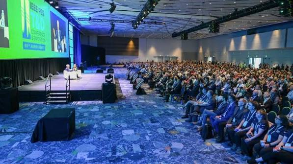

Technical Workshop

Join us for a technical workshop where students can learn practical concepts and explore new technologies.
- Date: To be announced
- Location: Lahore Garrison University
- Type: Technical Workshop
Empowering Students Through Technology, Innovation and Learning
IEEE Lahore Garrison University Student Branch is a student community focused on learning, innovation and professional development in technology and engineering.
The branch provides students with opportunities to participate in technical activities, workshops, seminars and educational events.
Explore upcoming activities and opportunities organized by the IEEE LGU Student Branch.

Join us for a technical workshop where students can learn practical concepts and explore new technologies.
Attend an informative seminar and learn about current trends, opportunities and developments in technology.
Connect with fellow students, share ideas and learn more about opportunities available through IEEE.
Joining the IEEE LGU Student Branch gives students opportunities to learn, participate and connect with others interested in technology and innovation.
Learn more about IEEE on the official IEEE website .
If you have any questions or want to learn more about the IEEE LGU Student Branch, you can contact us through the information below.
University: Lahore Garrison University
Student Branch: IEEE LGU Student Branch
Email: ieee@lgu.edu.pk